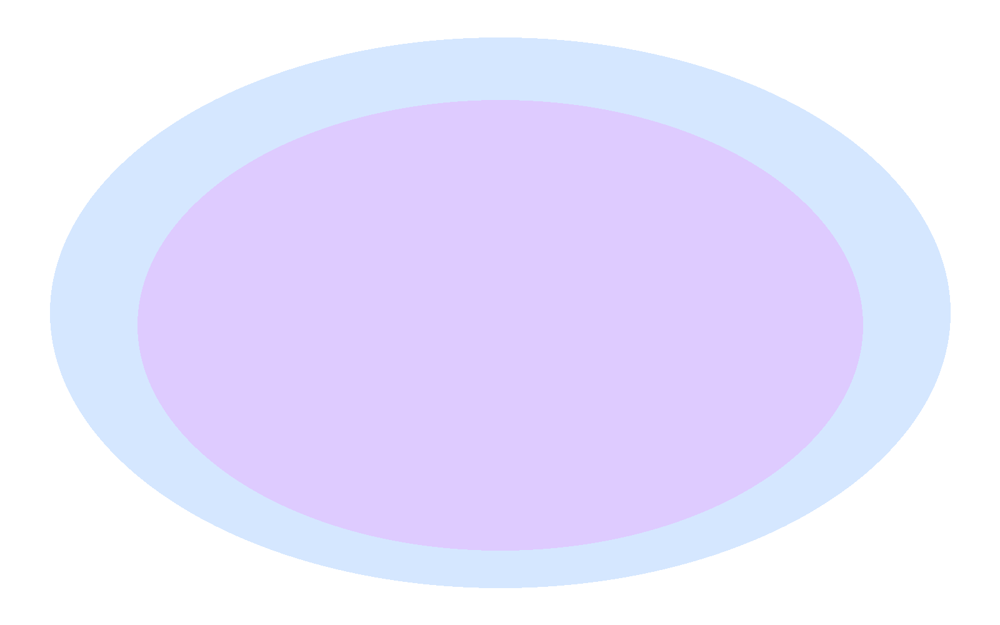

The Conscious Core
Conscious Core symbolizes inner light and growth — where neuroscience meets lived experience. A crystal lattice forms a protective space; a lotus represents awareness and compassion; and the DNA helix reflects structure, learning, and continuity.
